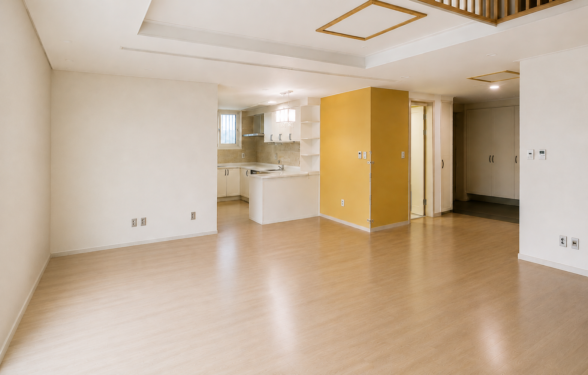
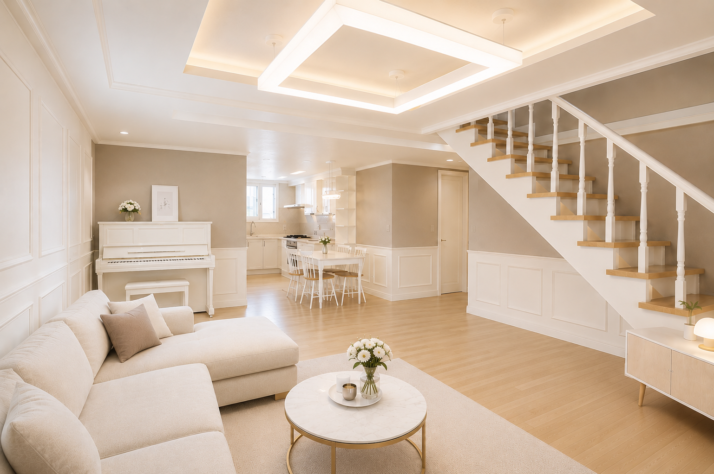
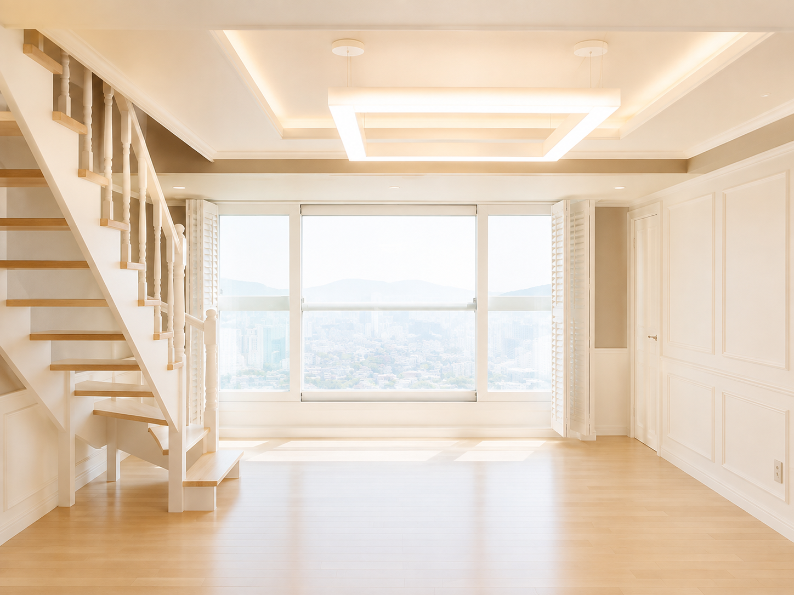
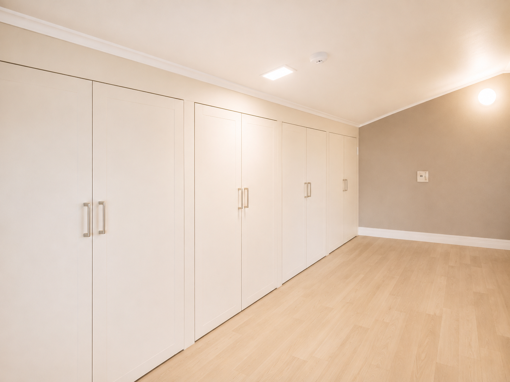
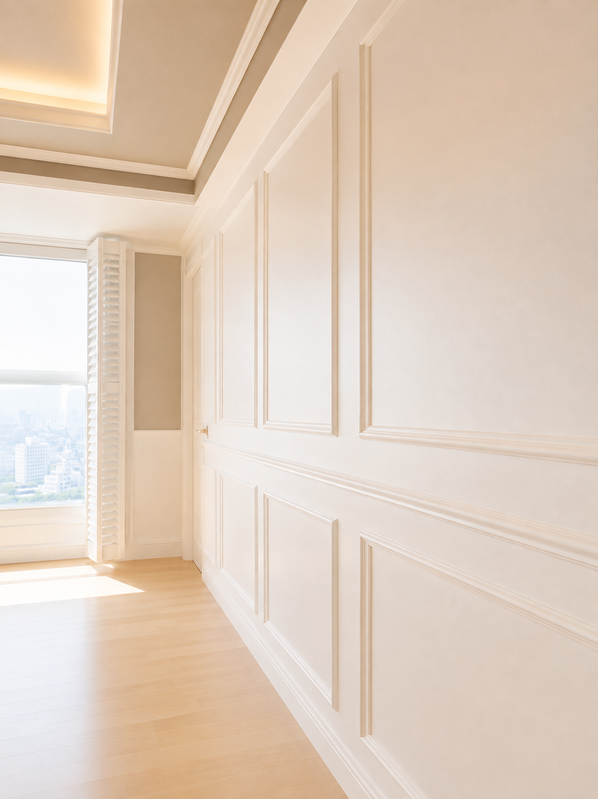
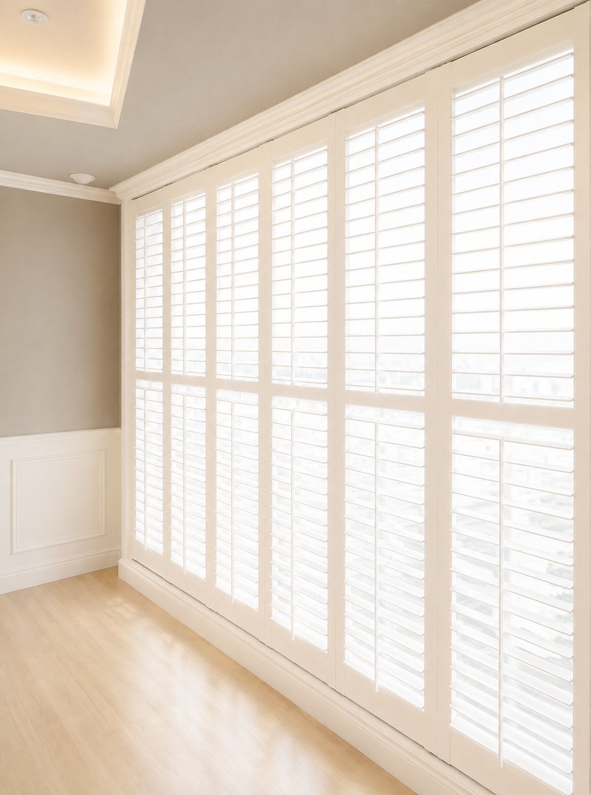

신길동 복층 아파트 리모델링
복층 구조의 장점을 살리고 웨인스코팅과 갤러리 루버, 맞춤 제작 계단으로 완성한 클래식 주거공간
클래식한 감성을 담은 리모델링
이번 프로젝트는 신길동 복층 아파트 리모델링입니다. 클래식한 분위기를 선호하면서도 공간이 무겁거나 단조롭게 느껴지지 않도록 화이트 웨인스코팅과 그레이 도장을 중심으로 전체 디자인의 균형을 잡았습니다.
복층 구조의 장점을 살릴 수 있도록 맞춤 제작 계단과 수납공간을 계획하고, 발코니 창에는 갤러리 루버를 설치해 채광 조절과 프라이버시 확보, 공간의 장식성까지 함께 만족하도록 구성했습니다.


개방감과 클래식한 감성을 담은 거실
복층 구조의 장점을 살려 거실과 주방, 계단이 하나의 공간처럼 자연스럽게 이어지도록 계획했습니다. 화이트 웨인스코팅과 그레이 컬러를 조합해 클래식한 분위기를 유지하면서도 공간이 무겁거나 답답하게 느껴지지 않도록 균형을 맞췄습니다.
높은 층고와 넓은 창을 활용해 자연광이 실내 깊숙이 들어오도록 하고, 간접조명과 메인 조명을 함께 적용해 낮과 밤 모두 편안한 분위기를 느낄 수 있도록 완성했습니다. 계단의 원목 디딤판은 화이트 중심의 공간에 따뜻한 질감을 더해줍니다.

공간 활용도를 높인 맞춤 제작 수납
복층 공간은 수납 계획에 따라 실제 생활의 편의성이 크게 달라집니다. 사용 빈도와 이동 동선을 고려해 맞춤 수납장을 제작하고, 벽면과 자연스럽게 이어지는 도어 라인으로 공간이 더욱 깔끔하고 넓어 보이도록 구성했습니다.
수납장 내부의 실용성뿐 아니라 외부에서 보이는 문짝의 간격과 손잡이 위치, 몰딩과의 연결선까지 세심하게 정리해 전체 인테리어와 이질감 없이 어우러지도록 시공했습니다.

정교한 웨인스코팅으로 공간의 품격을 높였습니다
웨인스코팅은 단순한 장식이 아니라 벽면의 비례와 공간의 인상을 결정하는 중요한 마감입니다. 벽의 길이와 높이에 맞춰 패널 간격을 계획하고, 몰딩의 수평과 수직을 반복 확인하며 균형 있게 시공했습니다.
주요 벽면은 올 화이트 웨인스코팅으로 정리하고, 나머지 공간은 하부 웨인스코팅과 그레이·화이트 도장을 조합했습니다. 클래식한 디테일은 살리면서도 단조롭지 않고 세련된 분위기가 유지되도록 마감했습니다.

채광과 프라이버시를 함께 고려한 갤러리 루버
확장형 거실의 발코니 창에는 공간 크기에 맞춰 갤러리 루버를 제작·설치했습니다. 루버 각도를 조절해 햇빛의 양을 세밀하게 조절할 수 있으며, 필요할 때는 외부 시선을 가려 실내의 프라이버시를 확보할 수 있습니다.
발코니 공간을 깔끔하게 가려주는 기능과 함께, 반복되는 루버의 선이 유럽풍 클래식 인테리어의 분위기를 더욱 선명하게 만들어줍니다. 창호 크기와 몰딩 라인에 맞춰 제작해 주변 마감과 자연스럽게 연결되도록 완성했습니다.

신길동 복층 아파트, 이렇게 완성되었습니다.
화이트 웨인스코팅의 정돈된 선과 원목 계단의 따뜻한 질감, 맞춤 수납과 갤러리 루버가 자연스럽게 이어지며 복층 구조의 개방감과 생활의 편안함을 함께 담았습니다.
각각의 요소가 따로 돋보이기보다 하나의 분위기로 연결되도록 디자인부터 제작, 시공과 마감까지 세심하게 완성한 공간입니다.
이번 리모델링의 핵심
복층 구조를 고려한 공간 계획
거실과 주방, 계단의 연결 관계를 정리해 개방감과 생활 동선을 함께 개선했습니다.
정교한 웨인스코팅 시공
벽면 비례에 맞춰 몰딩 간격을 계획하고 수평과 수직을 세심하게 맞춰 완성도를 높였습니다.
맞춤 계단과 수납 제작
공간 크기와 실제 사용 동선을 고려해 계단과 수납장을 맞춤 제작했습니다.
기능과 디자인을 갖춘 갤러리 루버
채광과 프라이버시를 조절하면서 클래식한 공간 분위기를 완성하도록 제작·설치했습니다.
시간이 지나도 가치 있는 공간을 만듭니다.
디자인소통은 디자인부터 맞춤 제작, 시공과 마감까지 모든 과정을 세심하게 관리합니다.
※ 본 포트폴리오의 이미지는 실제 시공 완료 후 촬영한 사진입니다. 일부 이미지는 촬영 환경에 따라 밝기·색감 및 주변 요소를 보정하여 실제 시공 결과를 보다 명확하게 전달하고 있습니다.